¡Ponte Guapo!
Connecting international donors with local ecosystems through a unified visual language
Biophilic Branding Environmental Wayfinding Non-Profit CRO
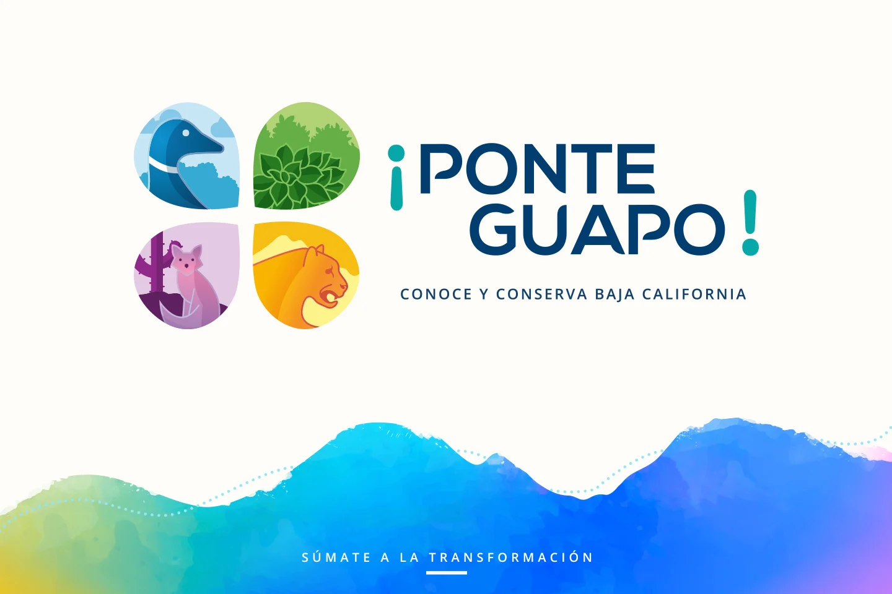
Bridging 5,200+ hectares of conservation with a unified, cross-border visual system. ¡Ponte Guapo! humanizes biodiversity through strategic branding to drive high-conversion fundraising.
Product
¡Ponte Guapo! is a strategic initiative designed to equip over 5,200 hectares across three Baja California nature reserves with a unified visual identity and key physical infrastructure including reserve wayfinding, a visitor center, a museum, and the San Quintín Waterkeepers research facility.
Challenge
Build a cohesive fundraising brand system for Mexico and the US to unify 5,200+ hectares of natural reserves, drive donor conversion, and fund critical physical infrastructure.
Solution
Designed a composite logo featuring four endemic species to instantly humanize the cause, paired with custom typography and a color palette drawn directly from native flora, fauna, and local sunsets.
Role
Brand Designer &
Visual Identity Specialist
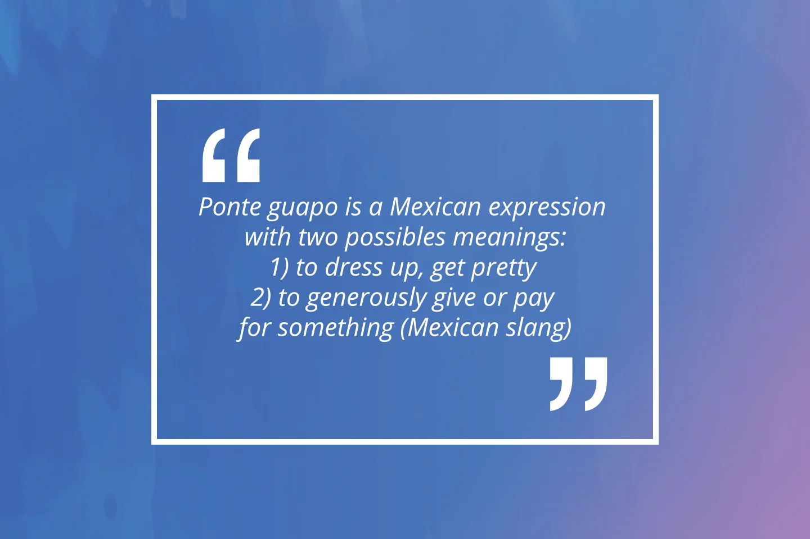
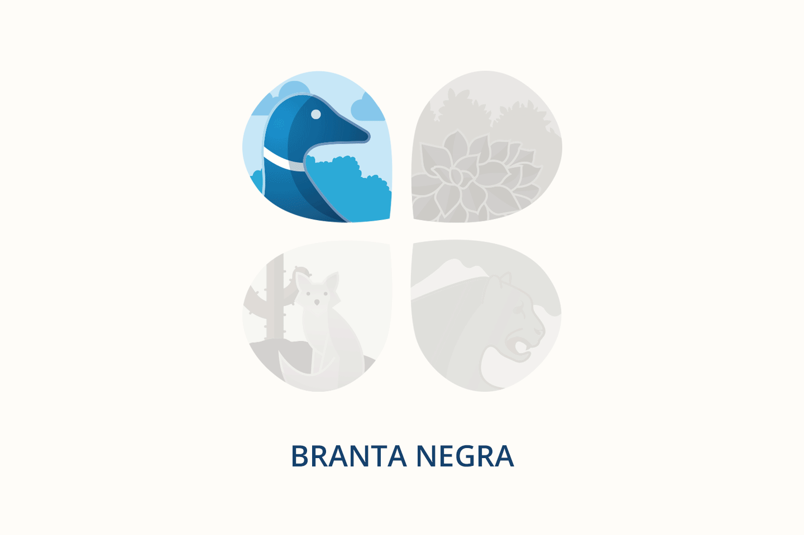
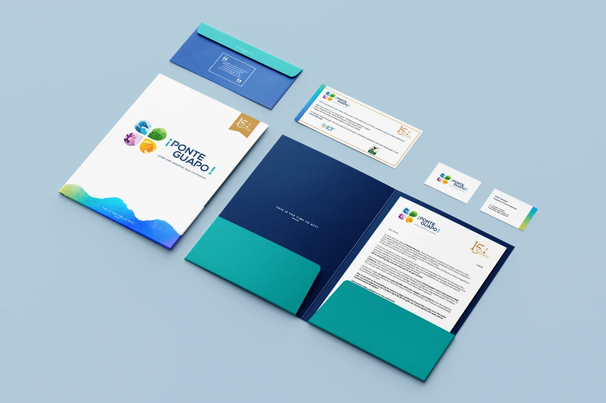
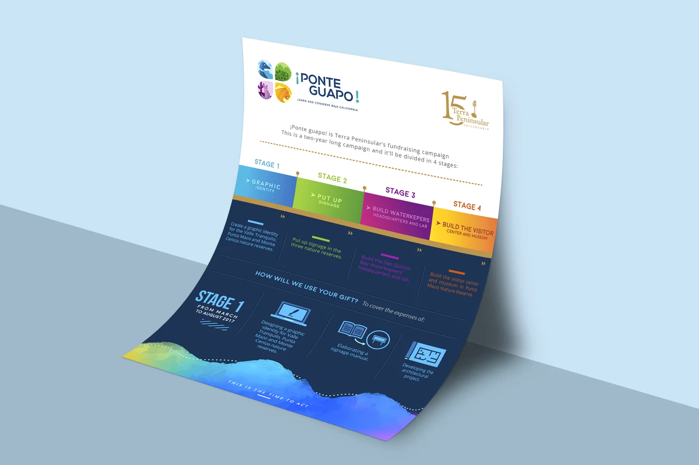
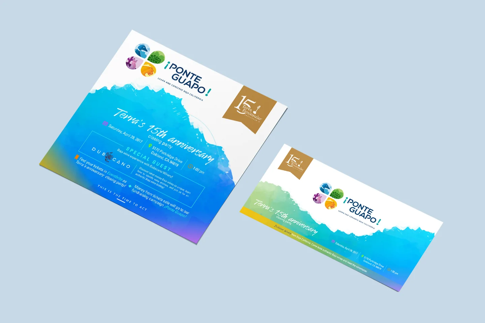
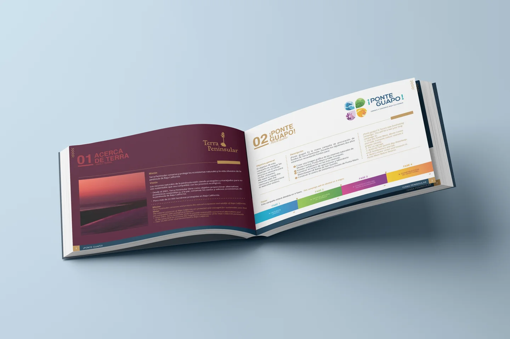
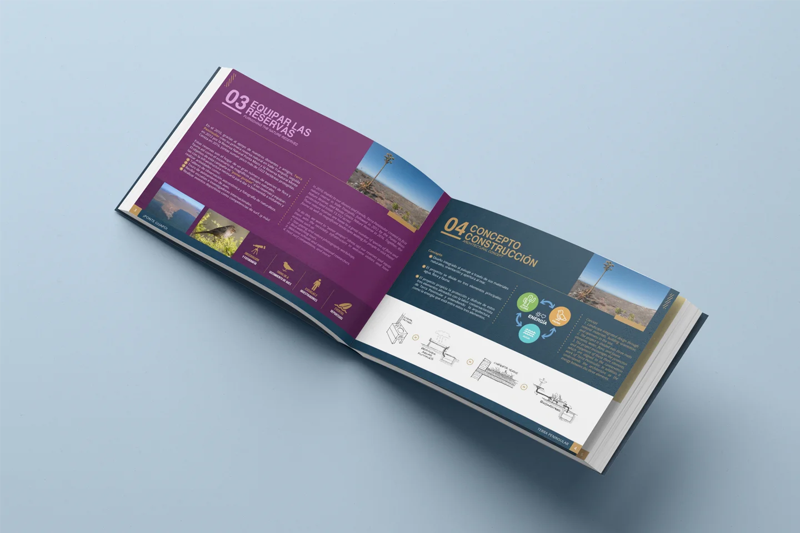
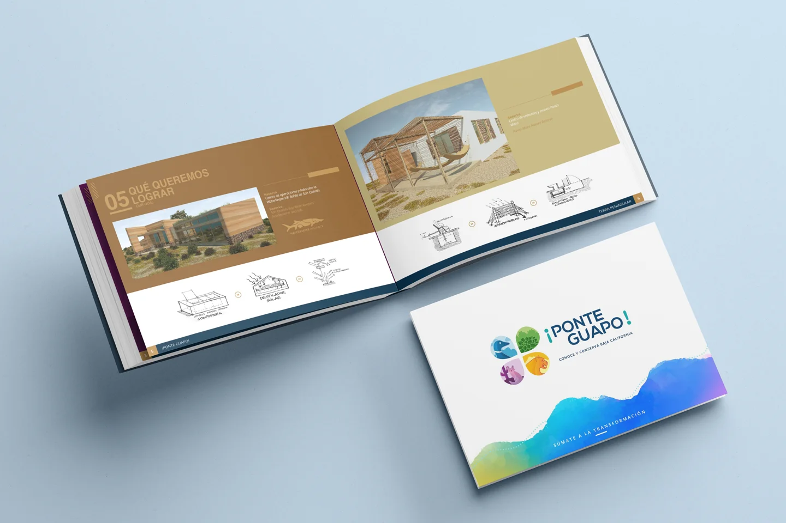
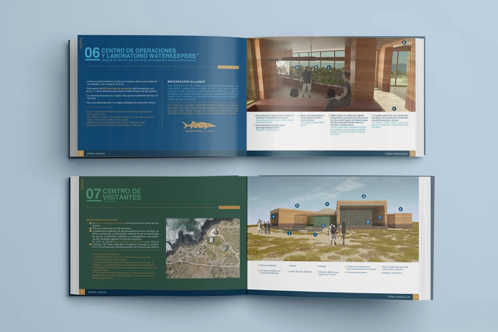
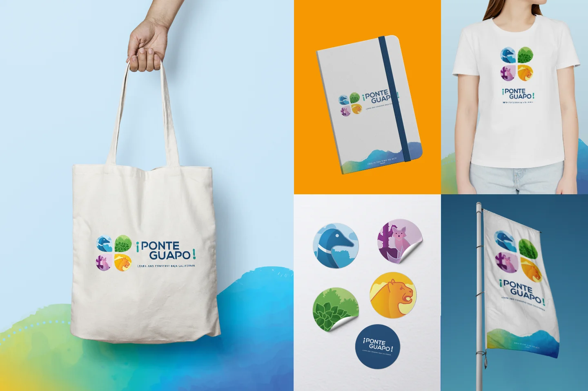